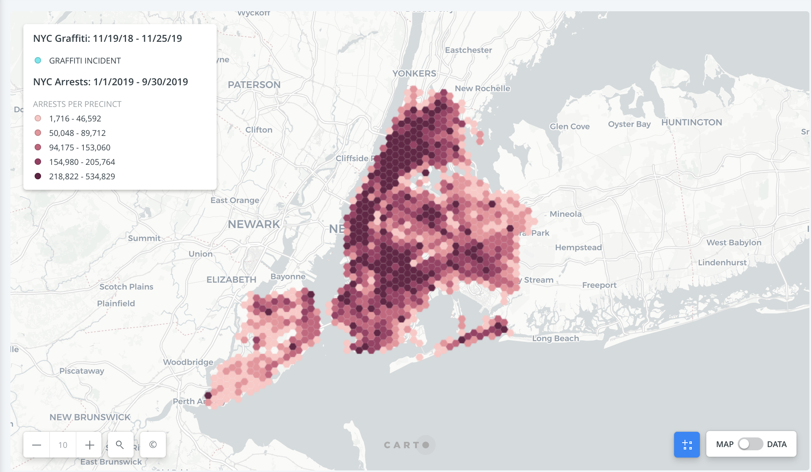
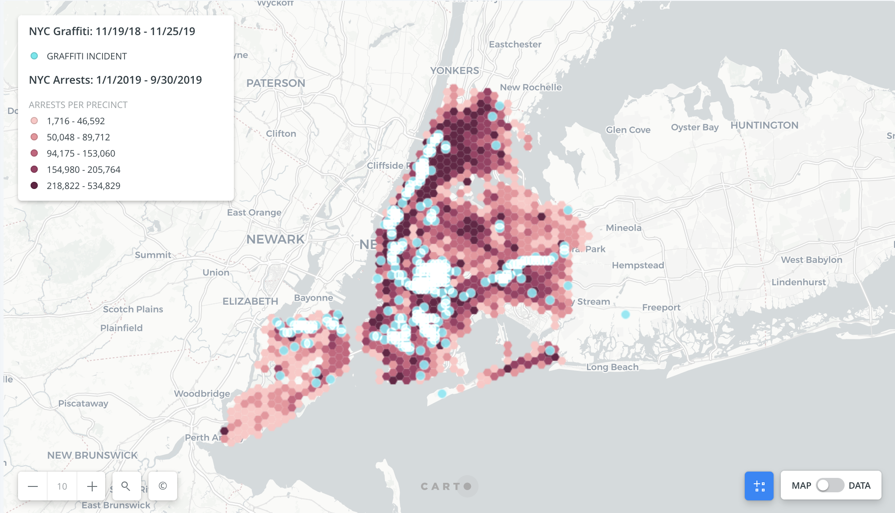

According to the Environmental Protection Agency, 80% of graffiti is tagging. Photo credit: Hin Bong Yeung; @hinbong
December 16, 2019
Since Mayor Rudy Guiliani popularized the method in the early 80s, “broken windows” policing has dominated New York City’s crime prevention.
Based on the theory that visible instances of urban blight, like vandalism, invite more serious crimes, the method spawned massive graffiti cleanups citywide, after which the city saw a significant decrease in felonies.
But in the 30 years since the MTA declared the subway graffiti-free, 311 complaints of vandalism have slowly crept back towards pre-Guliani levels, and in those areas so have violent crimes.
Between 2018 and 2019, shootings in areas of North Brooklyn increased 64%, reported the New York Times, violence police officials attribute to neighborhood gangs.
A timeline of graffiti instances in 2019 mapped over a rendering of New York City’s most crime-ridden areas visualizes the relationship: the areas of North Brooklyn that saw the most crime are the areas where graffiti reports were most-concentrated throughout the year.
Over the past year the majority of graffiti, shown in turquoise, has been in high crime areas, shown in dark red.
Two stills, one of New York City’s crime map and another of graffiti reports on a particularly active week offer side by side visuals of the correlation.
Areas with the highest crime rates are darker gradations of red. Photo credit: Suzannah Cavanaugh
Graffiti in 2019 occurred most frequently in areas with higher crime rates. Photo credit: Suzannah Cavanaugh
According to Kees Keizer, a social psychologist at the University of Groningen in the Netherlands who led a study on the association between vandalism and crime, it’s the graffiti that spurs higher levels of violence.
“When people observe that others have painted graffiti where it should not have they actually observe inappropriate behavior. This, we predict, weakens their concern for appropriateness and strengthens the goal to do what makes them feel good - for example, by being lazy and throwing paper on the street - or the goal to gain resources - say, by stealing,” said Keizer in the study.